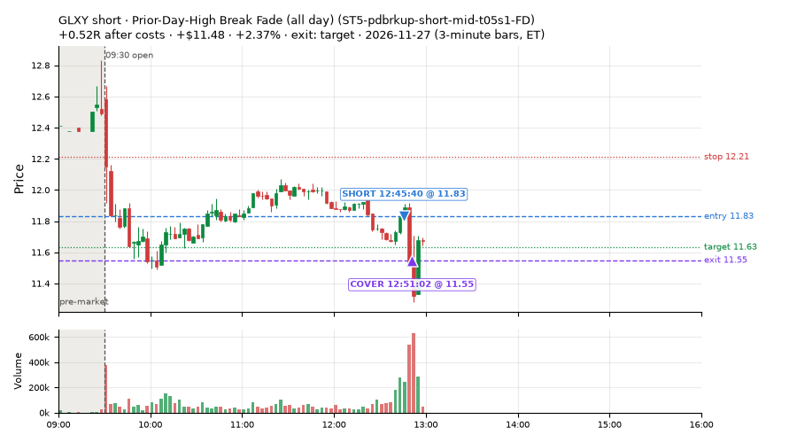
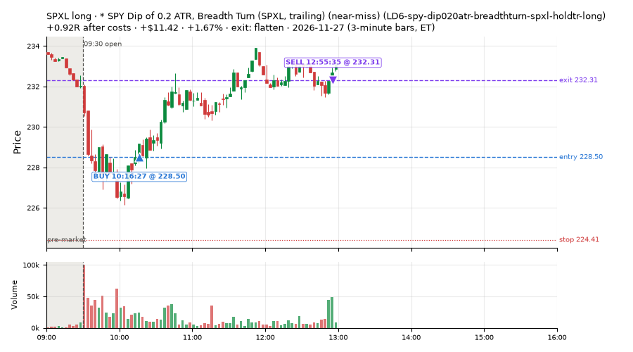
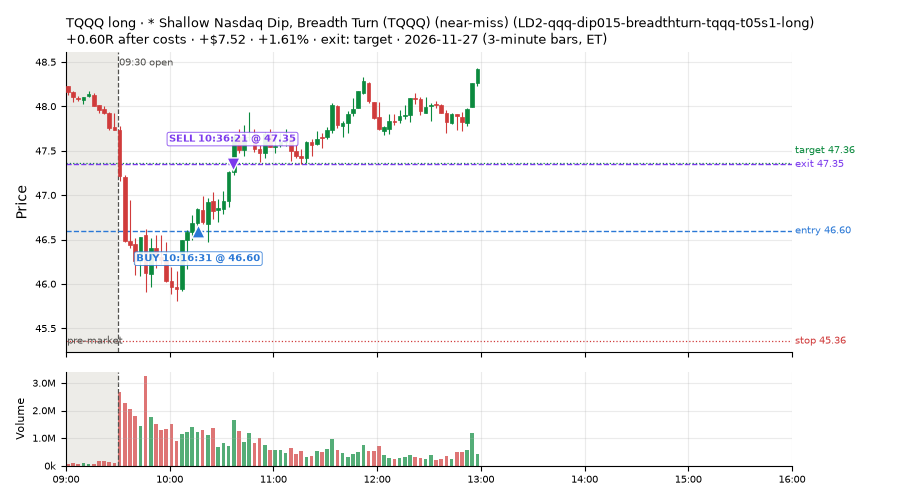
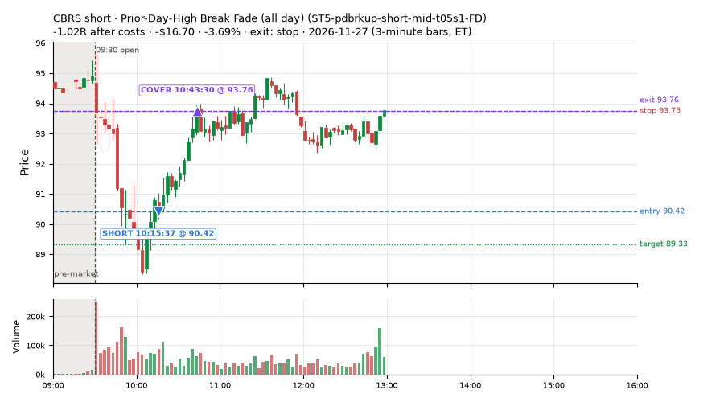
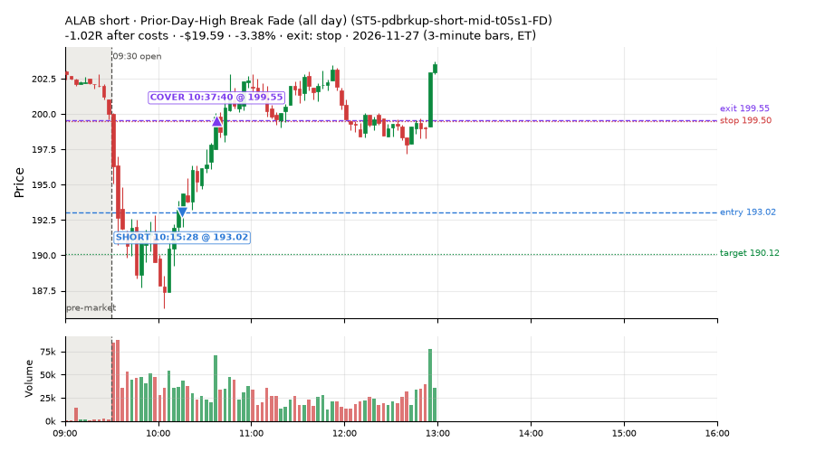
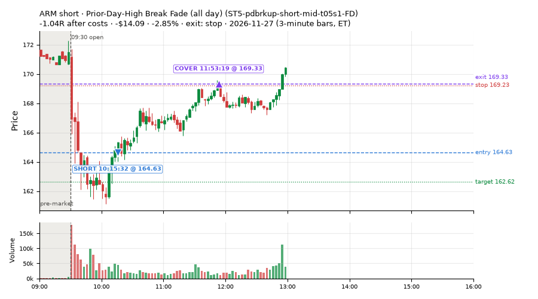
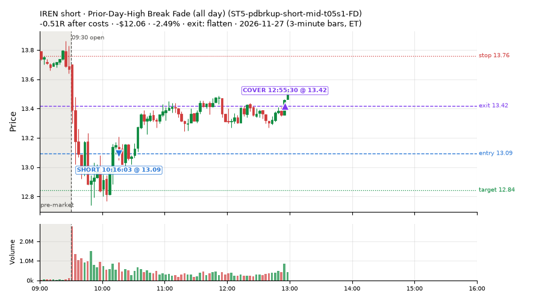
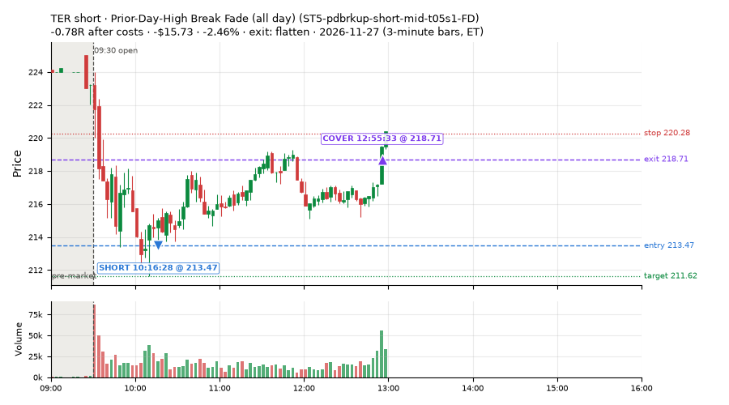

36 trades · win rate 28% · P/L $-177.14
PROBATION: no live setup has passed both locked test periods. 10 owner-directed setups added 2026-10-08 (MarcoFlow top 5 + 5 new), untested live. RW6G1 (RW6 + VWAP band guard) added 2026-10-09, probation.

| Symbol | Setup | Side | In | Out | Entry | Exit | Exit reason | % gained | P/L |
|---|---|---|---|---|---|---|---|---|---|
| GLXY | Prior-Day-High Break Fade (all day) (ST5-pdbrkup-short-mid-t05s1-FD) | short | 12:45 | 12:51 | 11.83 | 11.55 | target | +2.37% | $11.48 |
| SPXL | * SPY Dip of 0.2 ATR, Breadth Turn (SPXL, trailing) (near-miss) (LD6-spy-dip020atr-breadthturn-spxl-holdtr-long) | long | 10:16 | 12:55 | 228.50 | 232.31 | flatten | +1.67% | $11.42 |
| TQQQ | * Shallow Nasdaq Dip, Breadth Turn (TQQQ) (near-miss) (LD2-qqq-dip015-breadthturn-tqqq-t05s1-long) | long | 10:16 | 10:36 | 46.60 | 47.35 | target | +1.61% | $7.52 |
| Symbol | Setup | Side | In | Out | Entry | Exit | Exit reason | % lost | P/L |
|---|---|---|---|---|---|---|---|---|---|
| CBRS | ST5-pdbrkup-short-mid-t05s1-FD | short | 10:15 | 10:43 | 90.42 | 93.76 | stop | -3.69% | $-16.70 |
| ALAB | ST5-pdbrkup-short-mid-t05s1-FD | short | 10:15 | 10:37 | 193.02 | 199.55 | stop | -3.38% | $-19.59 |
| ARM | ST5-pdbrkup-short-mid-t05s1-FD | short | 10:15 | 11:53 | 164.63 | 169.33 | stop | -2.85% | $-14.09 |
| IREN | ST5-pdbrkup-short-mid-t05s1-FD | short | 10:16 | 12:55 | 13.09 | 13.42 | flatten | -2.49% | $-12.06 |
| TER | ST5-pdbrkup-short-mid-t05s1-FD | short | 10:16 | 12:55 | 213.47 | 218.71 | flatten | -2.46% | $-15.73 |








Signal to fill: median 1s, 90th percentile 3s (36 trades). Bars close each minute; the order follows the bar close.
Best excursion (MFE): median 0.29R; worst (MAE) median 0.75R. 42% of trades never got +0.25R in our favour; 0 reached +1R and still closed at or below 0.
| Symbol | Setup | Best R | Worst R | Closed R |
|---|---|---|---|---|
| LRCX | ST5-pdbrkup-short-mid-t05s1-FD | +0.64 | -1.01 | -1.04 |
| CRCL | ST5-pdbrkup-short-mid-t05s1-FD | +0.59 | -1.06 | -1.07 |
| EGO | MF3-open-flowsell-rsi5hi | +0.38 | -0.93 | -0.92 |
| HOOD | ST5-pdbrkup-short-mid-t05s1-FD | +0.23 | -1.02 | -1.05 |
| AVLV | MF3-open-flowsell-rsi5hi | +0.11 | -1.00 | -1.13 |
| Entry time | Trades | Win | Avg R | P/L |
|---|---|---|---|---|
| 09:50-10:30 | 18 | 17% | -0.60 | $-148.72 |
| 10:30-11:30 | 12 | 33% | -0.36 | $-33.94 |
| 11:30-13:00 | 6 | 50% | -0.07 | $5.52 |
| Setup | Trades | Win | Avg R after costs | Adj R (net of SPY) | Avg R ex-market (all sessions) | P/L |
|---|---|---|---|---|---|---|
| Gap-Down Rebound Overbought Short (all day) — WB5: first entry per name-day (no refire) (L3-gap-slope-rsi5hi-FD-WB5) | 1.0 | 0% | -1.11 | -1.05 | -0.35 (beta -0.82, n 215) | $-11.54 |
| * Shallow Nasdaq Dip, Breadth Turn (TQQQ) (near-miss) (LD2-qqq-dip015-breadthturn-tqqq-t05s1-long) | 1.0 | 100% | +0.60 | +0.48 | -0.09 (beta +2.49, n 7) | $7.52 |
| * SPY Dip of 0.2 ATR, Breadth Turn (SPXL, trailing) (near-miss) (LD6-spy-dip020atr-breadthturn-spxl-holdtr-long) | 1.0 | 100% | +0.92 | +0.57 | – | $11.42 |
| Early Sellers into a Pop (MF3-open-flowsell-rsi5hi) owner-directed; holdouts once: Sep-Oct -0.059R n170, Apr-Jun -0.034R n729 | 7.0 | 43% | -0.48 | -0.04 | +0.07 (beta -1.74, n 7) | $-12.76 |
| Gap-Down Pop Fade, Heavy Selling (all day) — WB4: up-day entry cut + SPY exit 0.30% (RW3-gapdn-rsi5pop-flowsell-short-FD-WB4) | 2.0 | 0% | -0.45 | -0.02 | -0.20 (beta -0.74, n 44) | $-2.58 |
| Prior-Day-High Break Fade (all day) (ST5-pdbrkup-short-mid-t05s1-FD) | 20.0 | 15% | -0.59 | -0.44 | -0.03 (beta -1.19, n 47) | $-174.78 |
| Gap-Up Faller Volume Spike Short (all day) (ST6-volspikeup-short-mid-t1s1-FD) | 3.0 | 33% | -0.01 | -0.01 | -0.42 (beta -0.96, n 12) | $1.58 |
| Midday-to-Close ETF Dip Buy (WB4 wide) (ULT-22-wb4-wide-etf-long) | 1.0 | 100% | +0.19 | +0.15 | +0.14 (beta +1.43, n 35) | $4.00 |
Market direction (SPY, beta 1) accounted for $-61.05 of today's $-177.14; the rest ($-116.09) came from the setups themselves. Avg R net of SPY: -0.25 (incl. a hedge leg's cost; report only).
19 setups live today. Today: 95 signals, 36 taken, 0 lost because another setup held the symbol (0%). Since 2026-11-05 (16 sessions): 2367 signals, 909 taken, 10 lost to other setups (0%). Peak open positions today 27 of 400 slots. Earnings blackout removed 138 symbols before scanning.
Simulated playing time (not live): 1447 what-if trades of signals not taken, avg -0.44R, 34% winners; of them 10 lost to another setup (avg +0.14R).
Silent: IDX3-spy075-0955-3x-trail, LD5-st2-breadthup-t05s1-long, GEN-261019-06-VWAPxUp-EMAdiffge0p29-PM-SPYgt0p5-holdtr-long, GEN-261026-10-ORBfailDn-EMAdChglem0p051-PM-BRopgt0p65-t1s1-long, NM-RWN4-ns2-spyup05-notfri-short
| Prio | Setup | Today sig / taken | Sessions | Signals / taken / trades | Taken/day | Expected/day | Lost to other setups | Lost to (setup n) | Top skip reasons | SIMULATED: not-taken n / avg R / win | Verdict |
|---|---|---|---|---|---|---|---|---|---|---|---|
| 1 | Gap-Down Pop Fade, Heavy Selling (all day) — WB4: up-day entry cut + SPY exit 0.30% RW3-gapdn-rsi5pop-flowsell-short-FD-WB4 | 6 / 2 | 8 | 84 / 44 / 44 | 5.50 | – | 0 | – | spread / quote / size 28, other 9, not shortable / shorts off 3 | 40 / +0.15R / 62% | ok 27.5 entries/week |
| 2 | Gap-Down Rebound Overbought Short (all day) — WB5: first entry per name-day (no refire) L3-gap-slope-rsi5hi-FD-WB5 | 11 / 1 | 6 | 968 / 215 / 215 | 35.83 | – | 0 | – | other 308, not shortable / shorts off 254, spread / quote / size 180 | 745 / -0.66R / 24% | ok 179.2 entries/week |
| 3 | RSI Collapse Dip Buy (all day) — WB1: skip when SPY up > 0.10% since 09:50 ST7-rsi50dn-long-pm-t1s1-FD-WB1 | 0 / 0 | 8 | 18 / 10 / 10 | 1.25 | – | 0 | – | spread / quote / size 4, other 4 | 8 / -0.12R / 50% | slow 6.2 entries/week; ~10 weeks to 60 trades |
| 4 | 20-Minute Opening Range Breakout — WB3: top 10 in play + price >= $20 orb20_a-WB3 | 1 / 0 | 8 | 7 / 2 / 2 | 0.25 | – | 0 | – | spread / quote / size 4, trigger missed between polls 1 | 4 / -0.83R / 0% | slow 1.2 entries/week; ~48 weeks to 60 trades |
| 5 | Index Dip Bounce 1 TQQQ IDX1-qqq100-0955-TQQQ-trail | 0 / 0 | 16 | 3 / 3 / 3 | 0.19 | – | 0 | – | – | 0 / – | slow 0.9 entries/week; ~64 weeks to 60 trades |
| 6 | * SPY Dip of 0.2 ATR, Breadth Turn (SPXL, trailing) (near-miss) LD6-spy-dip020atr-breadthturn-spxl-holdtr-long | 1 / 1 | 16 | 4 / 4 / 4 | 0.25 | – | 0 | – | – | 0 / – | slow 1.2 entries/week; ~48 weeks to 60 trades |
| 7 | * Oversold Pop after an SPY Dip-Turn (trailing) (near-miss) LD7-ns1-idxturn-holdtr-long | 0 / 0 | 16 | 12 / 6 / 6 | 0.38 | – | 0 | – | spread / quote / size 2, price through stop/target 2, other 2 | 6 / -0.10R / 33% | slow 1.9 entries/week; ~32 weeks to 60 trades |
| 8 | Gap-Down Reclaim Fade, Afternoon (near-miss) NM-PM-gapdn-above-pdh-rvol-short | 0 / 0 | 16 | 35 / 24 / 24 | 1.50 | – | 0 | – | other 7, not shortable / shorts off 2, spread / quote / size 2 | 11 / -0.25R / 55% | slow 7.5 entries/week; ~8 weeks to 60 trades |
| 9 | Prior-Day-High Break Fade (all day) ST5-pdbrkup-short-mid-t05s1-FD | 47 / 20 | 16 | 99 / 47 / 47 | 2.94 | 0.78 | 2 | ST7-rsi50dn-long-pm-t1s1-FD-WB1 2 | spread / quote / size 31, not shortable / shorts off 15, other 4 | 52 / -0.18R / 46% | slow 14.7 entries/week; ~4 weeks to 60 trades |
| 10 | Generated: PM Gap-Down Above-VWAP Short GEN-261027-04-VWAPatrge0-Gaplem2-FromOpenlem2-PM-SPYdn-t1s1-short | 0 / 0 | 9 | 96 / 44 / 44 | 4.89 | – | 0 | – | spread / quote / size 19, other 18, not shortable / shorts off 15 | 52 / +0.26R / 67% | ok 24.4 entries/week |
| 11 | * Shallow Nasdaq Dip, Breadth Turn (TQQQ) (near-miss) LD2-qqq-dip015-breadthturn-tqqq-t05s1-long | 1 / 1 | 16 | 7 / 7 / 7 | 0.44 | – | 0 | – | – | 0 / – | slow 2.2 entries/week; ~27 weeks to 60 trades |
| 12 | Early NS3 Short While QQQ Up (near-miss) NM-RWR3-ns3-qqqup-early-short | 0 / 0 | 16 | 25 / 11 / 11 | 0.69 | – | 0 | – | spread / quote / size 7, not shortable / shorts off 5, other 2 | 14 / +0.36R / 71% | slow 3.4 entries/week; ~17 weeks to 60 trades |
| 13 | Generated: Open First-Dip Short (extended) GEN-261022-04-RSI2le0-Eff6ge0p83-SMA20dge0p59-OPEN-BRvwlt0p5-t1s1-short | 0 / 0 | 9 | 36 / 9 / 9 | 1.00 | – | 0 | – | spread / quote / size 12, other 9, not shortable / shorts off 6 | 27 / -0.14R / 48% | slow 5.0 entries/week; ~12 weeks to 60 trades |
| 14 | Panic Flush Reversal (deep, 3x volume) CWT05-flush-m075-v3-long | 0 / 0 | 16 | 27 / 14 / 14 | 0.88 | – | 0 | – | other 6, spread / quote / size 4, broker rejected 2 | 12 / -0.09R / 67% | slow 4.4 entries/week; ~14 weeks to 60 trades |
| 15 | Spike-Pullback Flag Breakout CWT12-flag-s1-long | 0 / 0 | 16 | 31 / 18 / 18 | 1.12 | – | 0 | – | other 11, spread / quote / size 1, broker rejected 1 | 13 / +0.29R / 85% | slow 5.6 entries/week; ~11 weeks to 60 trades |
| 16 | Big Gainer SMA50 Cross Fade (all day) RW6-ns2-up3-short-FD | 3 / 0 | 10 | 106 / 39 / 39 | 3.90 | 7.12 | 3 | orb20_a-WB3 1, LD7-ns1-idxturn-holdtr-long 1, ULT-22-wb4-wide-etf-long 1 | not shortable / shorts off 41, spread / quote / size 20, symbol held by another setup 3 | 66 / -0.19R / 47% | ok 19.5 entries/week |
| 17 | Midday-to-Close ETF Dip Buy (WB4 wide) ULT-22-wb4-wide-etf-long | 1 / 1 | 5 | 43 / 35 / 35 | 7.00 | – | 2 | L3-gap-slope-rsi5hi-FD-WB5 2 | spread / quote / size 5, symbol held by another setup 2, other 1 | 8 / -0.04R / 50% | ok 35.0 entries/week |
| 18 | Early Sellers into a Pop MF3-open-flowsell-rsi5hi | 17 / 7 | 1 | 17 / 7 / 7 | 7.00 | 9.19 | 0 | – | other 6, spread / quote / size 4 | 10 / -0.69R / 10% | ok 35.0 entries/week |
| 19 | Gap-Up Faller Volume Spike Short (all day) ST6-volspikeup-short-mid-t1s1-FD | 7 / 3 | 6 | 24 / 12 / 12 | 2.00 | 1.24 | 0 | – | not shortable / shorts off 5, spread / quote / size 5, other 2 | 12 / -0.24R / 42% | slow 10.0 entries/week; ~6 weeks to 60 trades |
Every trade is attached as a CSV you can open and edit in Excel or Google Sheets. Live page: https://misiti15.github.io/MCF/live/